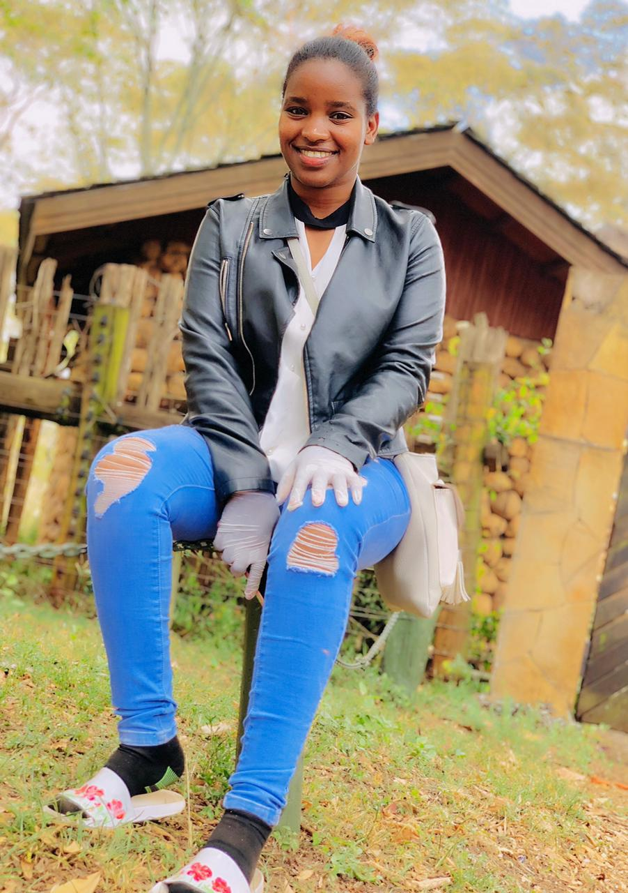
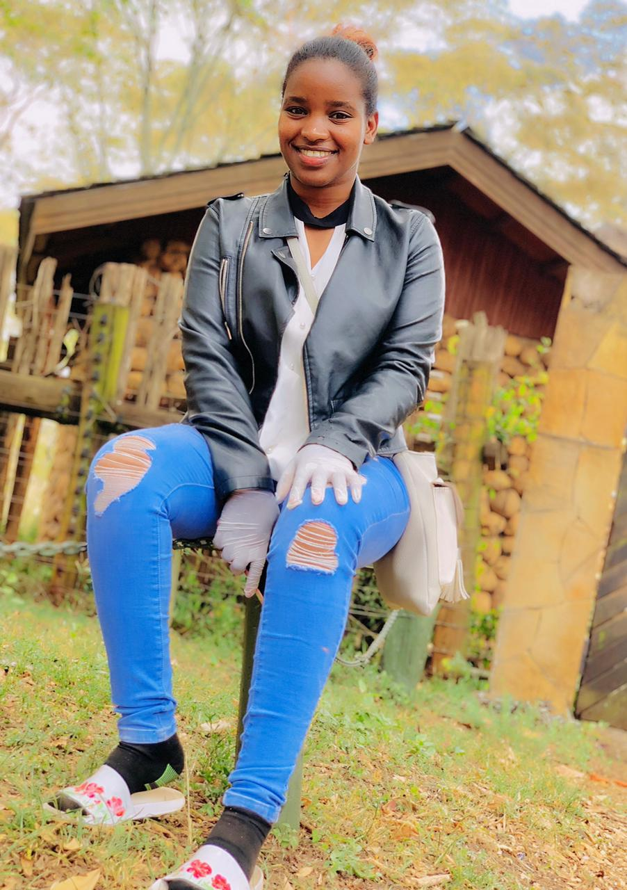
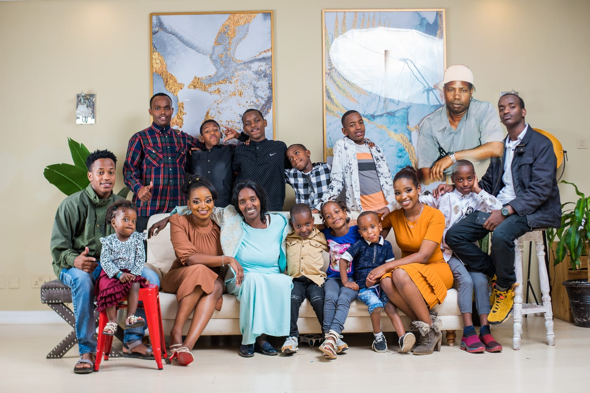
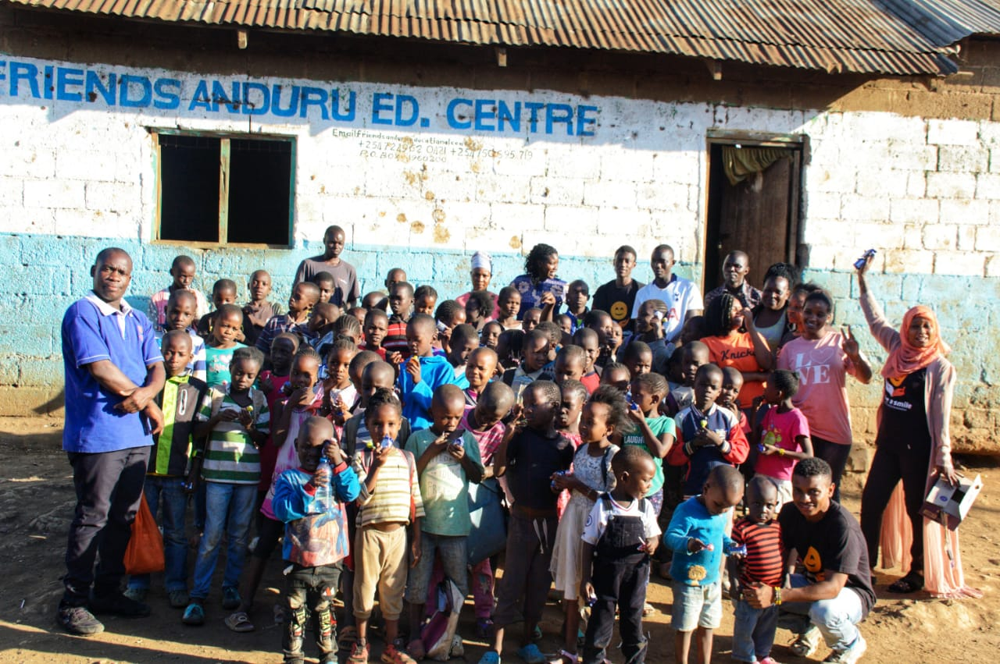
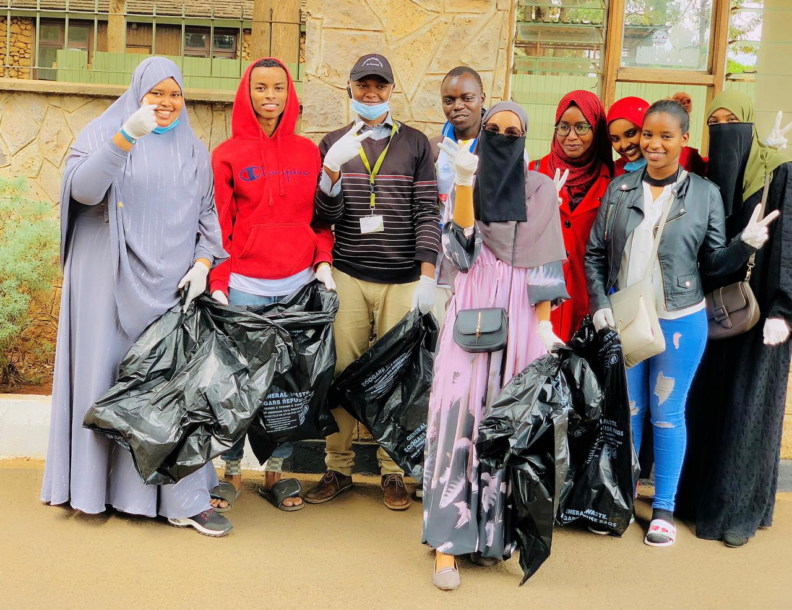
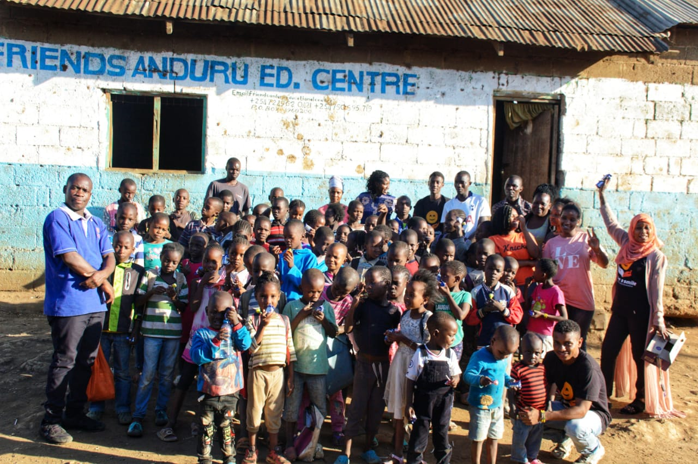
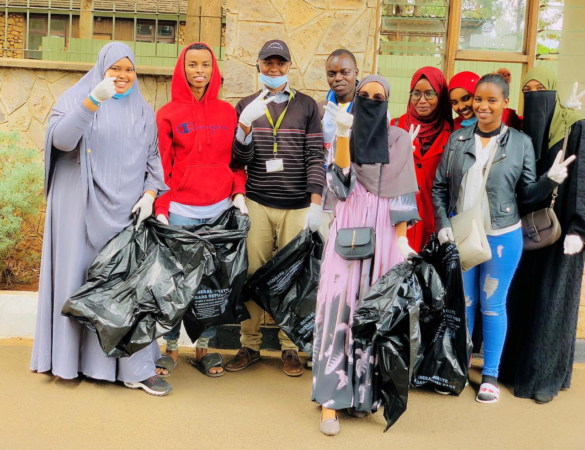

Homepage
.jpg) 
>.My name is wonte dula. A student from zetech university currently pursuing BSCIT I am a recent graduate of diploma in IT
My hobby is to advernture the world , doing charity, cooking and swimming. Oflate i have develop intrest in programming .
I live in ruiru but my homeland is Ethiopia oh yes the world best coffee makers and beautiful people.

>.My name is wonte dula. A student from zetech university currently pursuing BSCIT I am a recent graduate of diploma in IT
My hobby is to advernture the world , doing charity, cooking and swimming. Oflate i have develop intrest in programming .
I live in ruiru but my homeland is Ethiopia oh yes the world best coffee makers and beautiful people.
Childhood
One of my most cherished childhood memories revolves around our annual family camping trips. Every holiday, my parents would pack up the car with tents, sleeping bags, and a seemingly endless supply of snacks. We'd venture into the great outdoors, away from the hustle and bustle of city life. One particular year stands out vividly in my mind. We camped near a picturesque lake surrounded by lush greenery. As the sun set, we gathered around the campfire, roasting marshmallows and sharing stories. The crackling flames cast dancing shadows on our faces, and the air was filled with laughter and the distinct scent of burning wood. During that trip, my parents taught me how to set up a tent and build a proper campfire. These seemingly simple activities were profound lessons in self-reliance and resourcefulness. I learned to appreciate the value of teamwork as we collaborated to cook meals and navigate the trails. Those camping trips became a yearly tradition, shaping my love for nature and instilling a sense of adventure. The experiences fostered a deep connection with my family, creating bonds that have lasted a lifetime. Even today, the smell of a campfire instantly transports me back to those carefree holiday nights and the warmth of family togetherness. .
I had a very happy and eventful childhood. I grew up in a small town with my loving parents and 12 siblings. We spent our days swimming in the lake, hiking in the woods, and camping under the stars.
One of my favorite childhood memories is when I learned how to ride a bike. I was so excited to finally be able to ride with my friends. I spent hours practicing in the driveway until I could finally ride without wobbling.
Education
Throughout my academic journey, I have consistently strived for excellence, resulting in several notable achievements. In my high school years, I maintained a GPA well above the average, earning a spot on the honor roll every subject. This commitment to academic excellence reflects my dedication to learning and intellectual growth. One of my proudest academic accomplishments was graduating for my diploma. My project, which explored the intersection of biology and technology, not only garnered recognition but also fueled my passion for scientific inquiry. This experience taught me the importance of curiosity and perseverance in the face of challenges. Beyond the classroom, my involvement in extracurricular activities has played a crucial role in shaping my character. I was an active member of the football team .Serving as the team captain in my senior year, I led our squad to victory in several regional competitions, solidifying my commitment. In addition to academic and extracurricular success.
I attended Zetech university where I majored in DIT. I graduated with honors and was also a member of the HUAWEI Organization].
Skills & Talents
- Fitness and Well-being: Physical well-being is paramount to me. I am an advocate for a healthy lifestyle and engage in activities like yoga, hiking, and cycling. Regular exercise not only keeps me fit but also serves as a mental and emotional recharge.
- Community Engagement: Volunteering is a passion of mine. I actively participate in local community initiatives, focusing on education and environmental sustainability. Giving back to society is not just a responsibility but a fulfilling way to contribute to positive change.
- Artistic Expression: Outside the corporate world, I am an aspiring painter. My artwork has been showcased in social media, and I find solace in expressing my creativity through vibrant colors and unique perspectives. Painting allows me to balance the analytical nature of my professional life with a more intuitive and emotive outlet.
.jpg) 



Future Aspirations
My dream is to have a career that seamlessly integrates my passion for IT, charity, and adventure. I believe that technology has the power to transform lives, and I am committed to channeling that power toward creating a more sustainable and equitable world. Through my work, I hope to inspire others in the tech industry to recognize the potential they have to be forces of positive change.
As a recent IT graduate, I am driven by a dual passion for technology and making a positive impact on the world. Throughout my academic journey, I have honed my skills in areas such as software development, data analysis, and cybersecurity. However, what truly fuels my enthusiasm is the intersection of technology with philanthropy and adventure.
Beyond the confines of a traditional office, I dream of combining my love for adventure with my desire to make a difference. I envision embarking on a journey that takes me to different corners of the world, where I can apply my IT skills to support charitable initiatives. Whether it's setting up technology infrastructure in underserved areas or creating software solutions for humanitarian causes, I aim to use my technical knowledge to bring about positive change.
Contact
If you want to reach me here are my details
Email: wontedula12@gmail.com
Social Media: